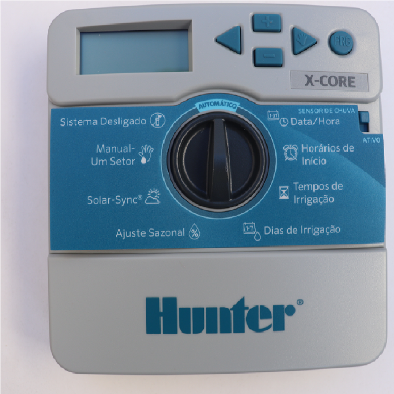
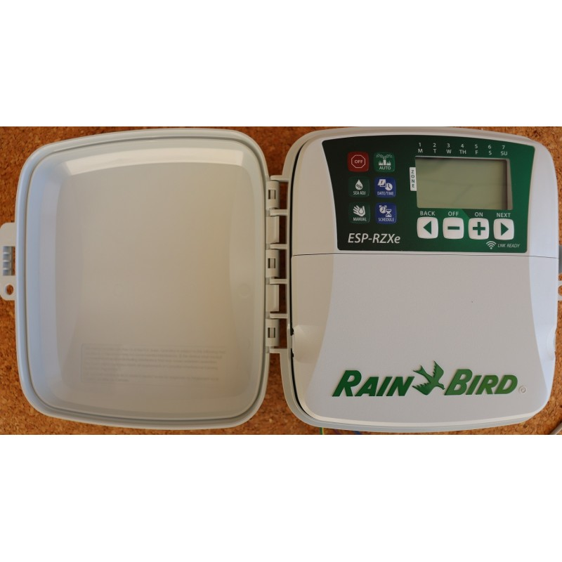
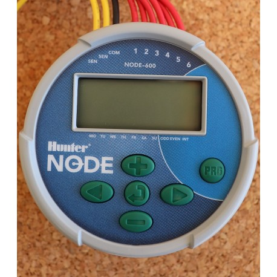
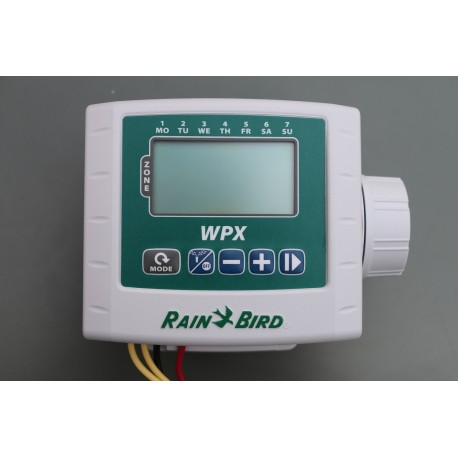

Alguns dos equipamentos para automatismos utilizados na rega e como os programar:
| EQUIPAMENTO | TUTORIAIS |
|---|---|
Hunter X-CoreLink Fabricante Este controlador básico fornece o funcionamento simples com a compatibilidade Solar Sync "inteligente". Com o controle de fácil configuração para até 8 estações, incluindo 3 programas e 4 tempos de início cada, o X-Core é a solução perfeita para aplicações residenciais. Ligue o revolucionário sensor Solar Sync e o X-Core é convertido em um "controlador inteligente", que regula os tempos de funcionamento da irrigação com base nas condições climáticas avaliadas localmente. O X-Core também é compatível com os controles remotos da Hunter para ativação rápida de irrigação e sem fios. A instalação, o funcionamento e a manutenção foram concebidas para ser simples, ao mesmo tempo que fornecem uma eficiência e confiabilidade ideais. |
|
Rain Bird RZXLink Fabricante O programador ESP-RZXe oferece uma configuração baseada em zonas que é mais fácil de compreender pelos utilizadores inexperientes. Estão disponíveis modelos de 4, 6 e 8 zonas. O ESP-RZXe oferece funcionalidades de programação flexíveis, tornando-o no programador ideal para uma ampla variedade de aplicações de rega, incluindo residenciais e comerciais ligeiros. Fácil de utilizar:O programador ESP-RZXe foi concebido a pensar na facilidade de utilização. A programação baseada em zonas permite que cada válvula seja programada de forma independente;não é necessário explicar “programas” aos utilizadores finais, eliminando praticamente as chamadas telefónicas. O amplo visor LCD apresenta simultaneamente toda a programação para cada zona. A interface do utilizador com base em gráficos simples é fácil de explicar e coloca cada funcionalidade do programador ao seu alcance.Preparado para WiFi LNK2:Combinado com o módulo WI-Fi LNK2 (vendido em separado) da Rain Bird, pode receber dados meteorológicos com base na Internet que ajustam os programas de rega diariamente, permitindo até 30% de poupança de água. |
|
Hunter NODE CONTROLLERLink Fabricante Para locais isolados ou regiões com restrições de energia, o Hunter Node é a solução mais confiável e inteligente. O Node é instalado de forma fácil e rápida em um solenoide de válvula, sem precisar de parafusos, furos ou cabos adicionais. A estrutura sólida e à prova d'água da unidade é resistente ao ambiente hostil típico de uma caixa de válvulas. Após ser colocado em uma caixa de válvulas, o Node funciona com uma ou duas baterias de 9 V, que fornecem energia padrão ou prolongada durante toda a estação. Além de ser altamente confiável, o Node conta com uma tela LCD fácil de programar, tem capacidade de controlar uma válvula mestre e usa a programação padrão dos controladores Hunter com três programas e quatro horários de início por programa. As diversas opções de programação e a alta confiabilidade fazem do Node um controlador de irrigação compacto e avançado, com a flexibilidade da alimentação por bateria. |
|
Rain Bird Série ESP-9VLink Fabricante O novo programador ESP-9V Rain Bird® proporciona facilidade na programação juntamente com um design robusto, capaz de suportar condições com mais humidade, mais sujidade e mais pó, tornando-o a escolha mais acertada para as suas necessidades de controlo de irrigação, independentemente da sua localização. Garantia de 5 anos únicatranquilize-se ao saber que a Rain Bird lhe presta assistência, no caso de se deparar com problemas no seu programador de irrigação.Design resistente às intempéries.proteção superior contra sujidade, pó e água para realmente poder instalar o seu programador de irrigação movido a bateria em qualquer local.Duração da bateria por + de 2 anosduração da bateria líder na indústria, mesmo sob condições rigorosas e de humidade.Programação intuitivaempreiteiros, administradores de propriedades e proprietários podem agilizar fluxos de trabalho e irrigar com precisão.Já tem demasiadas preocupações. Não deixe que o seu sistema de programação de irrigação seja uma delas. O novo programador ESP-9V é de fácil utilização, instalação e propriedade. Uma perspetiva clara do futuro. |